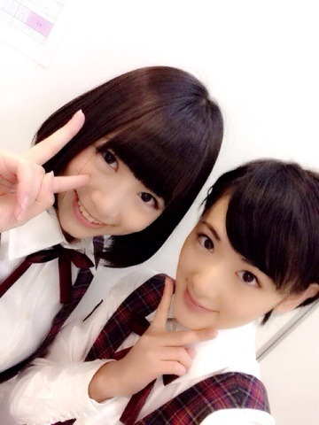
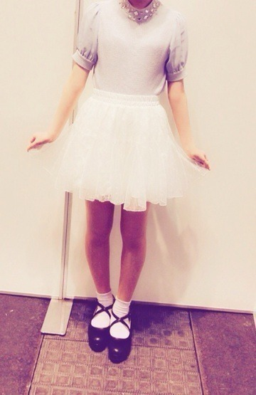
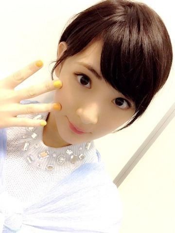
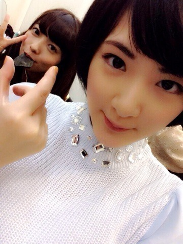

| 2014/04 08 Tue | 京都握手会！ |
４月5日、6日と京都にて全国握手会と個別握手会がありました！
来て下さったみなさんありがとうございました！
全国握手会はきーちゃんとペアでしたっ


自由な感じでふたりでおしゃべりしながら楽しかったヽ(・∀・)ノ
きーちゃん面白い☆
個別握手会はこの前全国キャンペーンで仙台に行った時に買いましたヽ(・∀・)ノ
家族と親友達が会いに来てくれてね、一緒にご飯食べたりしたんだ〜(^-^)
親友達〜☆
そのお洋服がこちらっ！

首はわざと切ってあります笑
なんか顔、凄く暗くなっちゃったのよね〜
靴以外ナイスクラップで揃えました(^-^)
最近はいろんなジャンルの服を着ます。

顔。
何故かエアー握手会の写真撮れませんでした。。。
ので。

ゆったんをつまんでみました。
ゆったん八ツ橋食べてるねかわいい

あと、
全国握手会のステージで総選挙へ立候補した事を皆さんのまえでご報告させていただきました。
正直。
裏切り者とか、なんでっ？
って思われているだろうな〜って思っていて。
コメントを見た時。
正直残念です。
という意見があり、凄く皆さんの前に立つのが少し怖くなっていました。
でも違いました。
皆さんは私をちゃんと見て下さって、頑張れって、応援してるよって沢山のパワーを頂きました。
コメントにも味方だよ。応援してるよって書いて下さって、、
本当にありがとうございます！
この事に関しては、正解や、はっきりとした事がないので、
私もどれが正しいのかわかりません。
でも私は前みたいにすぐ泣くような弱い私じゃありません。
悩む事はあるけれど、逃げません。
うしろを見てしまう時もあるけれど、前に進みます。
そこに皆さんの支えがあるから。。
私はもっと力強く進む事が出来ます。
皆さんの暖かい拍手や言葉で救われました。
本当にありがとうございました。
兼任を選んだからには、全てを見てきます。
どうか見守って下さい。
よろしくお願いします！！
ではっ
へばなっ！☆
コメント(876)
2014/04/08 10:24